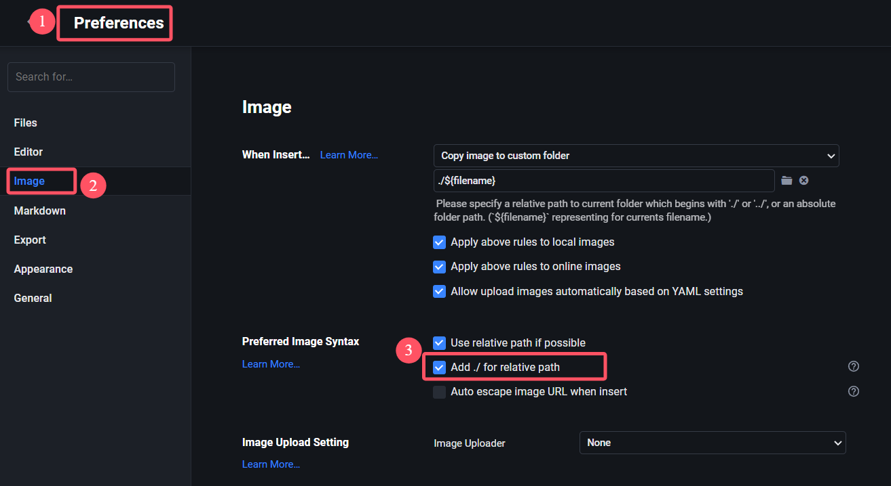

本文最后更新于：2024-10-17T22:45:45+08:00
下载Hexo和安装Fluid主题
关于这部分的内容可以参考Hexo和Fluid的官方文档来配置和下载，里面会有详细的说明，这边就不赘述。
美化（魔改）Fluid主题
关于美化Fluid主题，这个属于个人的偏好，可以通过搜索引擎的关键词
Hexo 和 Fluid
来找到相关的资料，下面是我参考过的一些资料，可以按需取用。
部署个人网站到Github
如果对Github比较熟悉的同学应该都知道 Github Page
可以做成个人网站，这个在网上也有很夺教程，这边也不重复了，下面给的是一些用
CDN 来加速网站加载的文章，可以参考。
一些有用的API
也许你还需要一些 API 来实现一些功能，比如展示
Github
的热力图、每日一图、优美的英文句子等，下面我也提供了一些可能有用的文章。
前端知识的学习资料
搭建个人博客网站避免不了需要了解一些前端的相关知识，下面是你可能需要的学习资料。
如何发布一篇博客
接下来的内容假设你已经搭建好了个人博客并且通过
Github Pages 发布了个人博客。
创建博客文章
创建博客文章的一般方法可以参考Hexo的相关文档，这里主要介绍我自己使用的自动化方案。
我的博客创建自动化方案
我的博客文章存放方案：按照日期放在相应的文件夹中，比如今天是2024年10月13日，那么今天写的文章就会存放在
source\_posts\2024\10\13 这个文件夹中，相应的图片会存放在
source\imgs\posts\2024\10\13 这个文件夹当中。
我的需求：我输入文章的标题，剩下的工作交给脚本执行——自动检测是否存在同名文件，创建文件，移动文件到相应的目录等功能。
我的实现方案：写一个 Python
脚本来实现（借助AI写出脚本代码）。
这个版本主要是实现图片和文章分别放在不同的文件目录下的解决方案，比如今天是2024年10月13日，那么今天写的文章就会存放在
source\_posts\2024\10\13 这个文件夹中，相应的图片会存放在
source\imgs\posts\2024\10\13 这个文件夹当中。
1
2
3
4
5
6
7
8
9
10
11
12
13
14
15
16
17
18
19
20
21
22
23
24
25
26
27
28
29
30
31
32
33
34
35
36
37
38
39
40
41
42
43
44
45
46
47
48
49
50
51
52
53
54
55
56
57
58
59
60
61
62
63
64
65
66
67
68
69
70
71
72
73
74
75
76
77
78
79
80
81
82
83
84
85
86
87
88
89
90
91
92
93
94
95
96
| import os
import shutil
import subprocess
from datetime import datetime
def create_hexo_post(post_name):
try:
today = datetime.today()
year = today.strftime("%Y")
month = today.strftime("%m")
day = today.strftime("%d")
base_dir = r"E:\ChenHuaneng\Article\Blogs\source"
post_dir = os.path.join(base_dir, "_posts", year, month, day)
img_dir = os.path.join(base_dir, "imgs", "posts", year, month, day)
if not os.path.exists(post_dir):
os.makedirs(post_dir)
print(f"创建文章文件夹: {post_dir}")
else:
print(f"文章文件夹已存在: {post_dir}")
if not os.path.exists(img_dir):
os.makedirs(img_dir)
print(f"创建图片文件夹: {img_dir}")
else:
print(f"图片文件夹已存在: {img_dir}")
while True:
post_filename = f"{year}-{month}-{day}-{post_name}.md"
new_post_path = os.path.join(post_dir, post_filename)
if os.path.exists(new_post_path):
print(f"文件 '{new_post_path}' 已存在，正在打开该文件。请重新输入新的文章名称。")
open_file(new_post_path)
post_name = input("请输入新的文章名称: ")
else:
os.system(f"hexo new post \"{post_name}\"")
post_path = os.path.join(base_dir, "_posts", post_filename)
if os.path.exists(post_path):
shutil.move(post_path, new_post_path)
print(f"文章已创建并移动到: {new_post_path}")
else:
print(f"未找到要移动的文章文件: {post_path}")
break
open_file(new_post_path)
open_folder(img_dir)
except KeyboardInterrupt:
print("\n程序已被用户中止。")
def open_file(file_path):
if os.path.exists(file_path):
if os.name == 'nt':
os.startfile(file_path)
elif os.name == 'posix':
opener = "open" if sys.platform == "darwin" else "xdg-open"
subprocess.call([opener, file_path])
print(f"已打开文件: {file_path}")
else:
print(f"文件不存在: {file_path}")
def open_folder(folder_path):
if os.path.exists(folder_path):
if os.name == 'nt':
os.startfile(folder_path)
elif os.name == 'posix':
opener = "open" if sys.platform == "darwin" else "xdg-open"
subprocess.call([opener, folder_path])
print(f"已打开文件夹: {folder_path}")
else:
print(f"文件夹不存在: {folder_path}")
if __name__ == "__main__":
try:
post_name = input("请输入文章名称: ")
create_hexo_post(post_name)
except KeyboardInterrupt:
print("\n程序已被用户中止。")
|
协调 Hexo
和 Typora 插入图片的最佳实践
出现第二个版本主要是因为我经常使用 Typora 编辑器进行本地
Markdown 文件的修改（文章的写作等等），而 Hexo
这个框架下的图片引用方式和 Typora
的图片引用方式不一样（相对地址的起点不一致），导致我如果要写一篇文章就要手动修改文章图片的引用方式，而不能直接使用
Typora 提供的拖动图片的方式。
问题描述：使用 Typora 进行 Markdown
的写作时，我希望能够直接将图片拖进 Typora
中实现插入图片的功能（这也是 Typora
提供的功能），但是如果直接使用 Typora 提供的功能，会遇到
Hexo 发布在网页上不能正确识别图片路径的问题。比如，我在
Typora
中有这样一个图片：，Typora
会识别为当前 .md 文件的目录下的
image.png，比如当前的 test.md 文件的路径是
\source\_posts\2024\10\17\2024-10-17-test.md，Typora
识别的图片路径在 \source\_posts\2024\10\17\image.png，但是
Hexo 需要图片的路径是
\source\_posts\2024\10\17\2024-10-17-test\image.png
才能在网页上正常显示。
想实现的功能：既能够使用 Typora
方便的拖进编辑器就能插入图片的功能，同时又能正确在 Hexo
中显示图片，并且不需要我手动修改图片的路径。
解决方案：首先，我查阅了 Hexo 的文档找到了一个实现
Hexo 识别当前文章目录下相对路径的方法，然后找到了这个解决方案并进行了改进，一个改进是通过编写
Python 脚本来实现标题出现空格的问题，另一个改进是通过
Typora 的图片引用添加 ./
的前缀功能使得不需要手动删除 Typora 会自动添加的
/ 导致的 Hexo 识别不了的问题，同时又能直接在
Typora 中看到图片。
注意：别忘了根据Typora文档的提示在文章开头的YAML
Front Matters部分加上 typora-root-url:<your path>
字段。

可以参考的其他解决方案：
下面是我的 Python 脚本：
1
2
3
4
5
6
7
8
9
10
11
12
13
14
15
16
17
18
19
20
21
22
23
24
25
26
27
28
29
30
31
32
33
34
35
36
37
38
39
40
41
42
43
44
45
46
47
48
49
50
51
52
53
54
55
56
57
58
59
60
61
62
63
64
65
66
67
68
69
70
71
72
73
74
75
76
77
78
79
80
81
82
83
84
85
86
87
88
89
90
91
92
93
94
95
96
97
98
99
100
101
102
103
104
105
106
107
108
109
110
111
112
113
114
115
116
117
118
119
120
121
122
123
124
125
| import os
import shutil
import subprocess
from datetime import datetime
def create_hexo_post(post_name):
try:
today = datetime.today()
year = today.strftime("%Y")
month = today.strftime("%m")
day = today.strftime("%d")
base_dir = r"E:\ChenHuaneng\Article\Blogs\source"
post_dir = os.path.join(base_dir, "_posts", year, month, day)
img_dir = os.path.join(base_dir, "imgs", "posts", year, month, day)
if not os.path.exists(post_dir):
os.makedirs(post_dir)
print(f"创建文章文件夹: {post_dir}")
else:
print(f"文章文件夹已存在: {post_dir}")
if not os.path.exists(img_dir):
os.makedirs(img_dir)
print(f"创建图片文件夹: {img_dir}")
else:
print(f"图片文件夹已存在: {img_dir}")
while True:
post_filename = f"{year}-{month}-{day}-{post_name}.md"
new_post_path = os.path.join(post_dir, post_filename)
new_post_folder_path = os.path.join(post_dir, f"{year}-{month}-{day}-{post_name}")
if os.path.exists(new_post_path):
print(f"文件 '{new_post_path}' 已存在，正在打开该文件。请重新输入新的文章名称。")
open_file(new_post_path)
post_name = input("请输入新的文章名称: ")
else:
os.system(f"hexo new post \"{post_name}\"")
post_path = os.path.join(base_dir, "_posts", post_filename)
post_folder_path = os.path.join(base_dir, "_posts", f"{year}-{month}-{day}-{post_name}")
if os.path.exists(post_path):
shutil.move(post_path, new_post_path)
print(f"文章已创建并移动到: {new_post_path}")
modify_markdown_file(new_post_path, post_filename, year, month, day)
else:
print(f"未找到要移动的文章文件: {post_path}")
if os.path.exists(post_folder_path):
shutil.move(post_folder_path, new_post_folder_path)
print(f"同名文件夹已移动到: {new_post_folder_path}")
else:
print(f"未找到要移动的文件夹: {post_folder_path}")
break
open_file(new_post_path)
open_folder(img_dir)
open_folder(post_dir)
except KeyboardInterrupt:
print("\n程序已被用户中止。")
def modify_markdown_file(file_path, post_filename, year, month, day):
""" 修改生成的 Markdown 文件，更新 banner_img 和 index_img 中的日期，以及 typora-root-url """
with open(file_path, 'r', encoding='utf-8') as file:
content = file.read()
date_str = f"{year}/{month}/{day}"
content = content.replace("/imgs/posts/year/month/day/banner.", f"/imgs/posts/{date_str}/banner.")
file_name_without_extension = post_filename[:-3]
content = content.replace("[[filename]]", file_name_without_extension)
with open(file_path, 'w', encoding='utf-8') as file:
file.write(content)
print(f"已更新 Markdown 文件中的图片路径和 typora-root-url.")
def open_file(file_path):
""" 打开指定文件 """
if os.path.exists(file_path):
if os.name == 'nt':
os.startfile(file_path)
elif os.name == 'posix':
opener = "open" if sys.platform == "darwin" else "xdg-open"
subprocess.call([opener, file_path])
print(f"已打开文件: {file_path}")
else:
print(f"文件不存在: {file_path}")
def open_folder(folder_path):
""" 打开指定文件夹 """
if os.path.exists(folder_path):
if os.name == 'nt':
os.startfile(folder_path)
elif os.name == 'posix':
opener = "open" if sys.platform == "darwin" else "xdg-open"
subprocess.call([opener, folder_path])
print(f"已打开文件夹: {folder_path}")
else:
print(f"文件夹不存在: {folder_path}")
if __name__ == "__main__":
try:
post_name = input("请输入文章名称: ")
create_hexo_post(post_name)
except KeyboardInterrupt:
print("\n程序已被用户中止。")
|
提醒：自动化脚本可以做的内容远不止这些，还可以完成很多重复繁琐的工作，所以当你遇到一个重复性的工作的时候，可以思考一下是否可以用自动化的脚本来实现。
编辑博客
使用 Markdown 编辑器
编辑博客一般是在本地编辑完，然后通过本地查看之后没有问题再推送到远程仓库来实现发布。
编辑博客有两种方式，一种是先使用 hexo 创建文件：
1
| hexo new post --path 20231203Hello/Hello # 指定路径创建名为Hello的.md文件，路径可以省略
|
1
| hexo new "Hello World!" # 默认是post，如果博客名称有空格需要用双引号包裹起来
|
然后使用类似
Typora、sublime、Obsidian 等
Markdown 编辑器编辑完之后再用 hexo
的命令在本地预览，没有问题之后再推送到远程仓库。
1
2
3
4
| hexo clean # 清除缓存
hexo g # hexo generate
hexo s # hexo server
# 详细的命令说明: https://hexo.io/zh-cn/
|
使用 Hexo-admin 插件
关于详细的安装和使用说明可以参考这个链接: jaredly/hexo-admin:
An Admin Interface for Hexo (github.com)
安装的命令 npm install --save hexo-admin
，安装之后在博客的目录下执行 hexo server -d
然后在浏览器打开 http://localhost:4000/admin/
就可以进行博客的编辑了。之后的推送到远程仓库的步骤是一样的。
本地预览
要本地预览编辑完的博客可以使用 hexo clean
清除缓存，然后用 hexo g 生成必要的文件，然后执行
hexo s 来启动本地的服务，之后在浏览器打开
http://localhost:4000/
就能看到编辑完之后的效果。如果效果满意就可以准备推送到远程仓库了。
如果觉得每次在本地预览都要重新输入三个命令显得很麻烦可以将这三个命令写成一个
PowerShell (针对
Windows 10)的脚本，然后每次在本地预览的时候执行这个脚本即可。比如我写了一个脚本来执行上面这三个操作简化我的工作：
1
2
3
| npx hexo clean
npx hexo g
npx hexo s -p 8080
|
推送编辑完的博客到远程仓库
Git 推送到远程仓库的一般步骤：
1
2
3
4
| git pull origin main --rebase # 也可以不是rebase，按需选择
git add . # 个人习惯把修改的内容全部一次添加
git commit -m "message" # 提交的说明
git push -u origin main # 提交到远程仓库
|
推送之后到个人的 Github
相关的仓库查看是否推送成功，如果推送成功就可以在发布的Page中查看了，比如我的个人博客的
Github 地址就是
https://chen-huaneng.github.io/ 。
使用 Hexo
提供的一键部署方案
除了使用 Github Actions 实现自动部署之外，还可以采用
Hexo 提供的一键部署方案，只需要一行命令即可
具体的配置参考官方文档:一键部署 |
Hexo
有用的一些编辑技巧
下面是一些有用的编辑技巧，注意下面的技巧适用于发布博客，并且使用的主题是
Fluid ，用 Hexo 驱动，可能存在部分语法和
Markdown 不兼容，比如图片可能在 Markdown
编辑器中并不能实时渲染。
在文本中插入一张图片
在 Fluid 主题中，默认的路径是博客文件夹下的
source
文件夹，所以你可以通过相对路径来引用一张图片，比如我现在要引用一张
source/imgs/posts/2023/12/03/banner.jpg 那么我就可以在
Markdown 使用
1
| 
|
来引用，效果如下：
 Banner
Banner
在文本中插入代码块
如果想要在博客的文章中插入代码块，可以参考代码高亮 |
Hexo的说明来写，当然如果你使用 Fluid
并且配置了相关的设置，那么使用正常的 Markdown
语法是能够正常渲染出来的。下面是一个演示：
1
2
3
| public static void main(String args[]) {
System.out.println("Hello World!");
}
|
要渲染上面的代码块，在 Markdown 中的语法是：
1
2
3
4
5
| ```java
public static void main(String args[]) {
System.out.println("Hello World!");
}
```
|
在文本中使用脚注
在 Fluid 主题中支持自动生成脚注的引用，相关说明参考配置指南 | Hexo Fluid
用户手册 (fluid-dev.com)，下面是一个演示：
这是一句话 ，下面有脚注。
相关的 Markdown
语法是，建议把所有的脚注放在文章末尾，方便管理：
Tag插件
Fluid
主题还内置了一些相关的Tag插件可以使用，详细的说明参考配置指南 | Hexo Fluid
用户手册 (fluid-dev.com)。
在 markdown 中加入如下的代码来使用便签：
1
2
3
| {% note success %}
文字 或者 `markdown` 均可
{% endnote %}
|
或者使用 HTML 形式：
1
| <p class="note note-primary">标签</p>
|
效果展示：
标签
可选便签：
primary
secondary
success
danger
warning
info
light
使用时 &{&% note primary &%&} 和
&{&% endnote &%&}
需单独一行，否则会出现问题
行内标签
在 markdown 中加入如下的代码来使用 Label：
1
| {% label primary @text %}
|
可选 Label：
primary
default
info
success
warning
danger
折叠块
使用折叠块，可以折叠代码、图片、文字等任何内容，你可以在 markdown
中按如下格式：
1
2
3
| {% fold info @title %}
需要折叠的一段内容，支持 markdown
{% endfold %}
|
info: 和行内标签类似的可选参数 title:
折叠块上的标题，下面是一些例子。
1
2
3
| public static void main(String args[]) {
System.out.println("Hello World!");
}
|
banner
勾选框
在 markdown 中加入如下的代码来使用 Checkbox：
1
| {% cb text, checked?, incline? %}
|
text：显示的文字 checked：默认是否已勾选，默认 false incline:
是否内联（可以理解为后面的文字是否换行），默认 false
示例：
1
2
3
4
5
6
7
| {% cb 普通示例 %}
{% cb 默认选中, true %}
{% cb 内联示例, false, true %} 后面文字不换行
{% cb false %} 也可以只传入一个参数，文字写在后边（这样不支持外联）
|
普通示例
默认选中
内联示例
后面文字不换行
也可以只传入一个参数，文字写在后边（这样不支持外联）
按钮
你可以在 markdown 中加入如下的代码来使用 Button：
1
| {% btn url, text, title %}
|
或者使用 HTML 形式：
1
| <a class="btn" href="url" title="title">text</a>
|
url：跳转链接 text：显示的文字
title：鼠标悬停时显示的文字（可选）
效果展示：
text
text
组图
如果想把多张图片按一定布局组合显示，你可以在 markdown
中按如下格式：
1
2
3
4
5
6
7
| {% gi total n1-n2-... %}


{% endgi %}
|
total：图片总数量，对应中间包含的图片 url 数量
n1-n2-...：每行的图片数量，可以省略，默认单行最多 3 张图，求和必须相等于
total，否则按默认样式。下面是示例：
LaTeX数学公式
当需要使用 LaTeX (opens
new
window)语法的数学公式时，可手动开启本功能，需要完成三步操作：
1. 设置主题配置
1
2
3
4
5
| post:
math:
enable: true
specific: false
engine: mathjax
|
specific: 建议开启。当为 true 时，只有在文章 front-matter (opens new
window)里指定 math: true
才会在文章页启动公式转换，以便在页面不包含公式时提高加载速度。
engine: 公式引擎，目前支持 mathjax 或
katex。
2. 更换 Markdown 渲染器
由于 Hexo 默认的 Markdown
渲染器不支持复杂公式，所以需要更换渲染器（mathjax 可选择性更换）。
然后根据上方配置不同的 engine，推荐更换如下渲染器：
mathjax
1
2
| npm uninstall hexo-renderer-marked --save
npm install hexo-renderer-pandoc --save
|
并且还需安装
Pandoc(opens new window)
katex
1
2
3
| npm uninstall hexo-renderer-marked --save
npm install hexo-renderer-markdown-it --save
npm install @traptitech/markdown-it-katex --save
|
然后在站点配置中添加：
1
2
3
| markdown:
plugins:
- "@traptitech/markdown-it-katex"
|
3. 安装完成后执行 hexo clean
书写公式的格式：
数学公式行间示例： \[
E = mc^2
\] 没有意义的行内展示：\(h =
\frac{v}{2}\)。
- 如果公式没有被正确渲染，请仔细检查是否符合上面三步操作。
- 不可以同时安装多个渲染插件，包括
hexo-math 或者
hexo-katex 这类插件，请注意检查
package.json。
- 如果更换公式引擎，对应渲染器也要一并更换。
- 不同的渲染器，可能会导致一些 Markdown
语法不支持，或者渲染样式有细微差异。
- 自定义页面默认不加载渲染，如需使用，需在 front-matter 中指定
math: true
文档内部任意跳转
文档内部任意跳转主要是方便某些较长的文章在某个地方要引用到文章自身的某个段落或者标题，或者要建立类似于目录之类的方便跳转的关系。比如下面的代码就实现了跳转到
创建博客文章 标题和跳转到 本地预览
标题下的第一段的功能：
1
2
3
4
5
6
7
8
9
10
11
|
<a id="anchor1"></a>
### 创建博客文章
...
[跳转到 `创建博客文章` 标题](#anchor1)
<a id="anchor2"></a>
要本地预览编辑完的博客可以使用 `hexo clean` 清除缓存，然后用 `hexo g` 生成必要的文件，然后执行 `hexo s` 来启动本地的服务，之后在浏览器打开 `http://localhost:4000/` 就能看到编辑完之后的效果。如果效果满意就可以准备推送到远程仓库了。
...
[跳转到 `本地预览` 标题下的第一段](#anchor2)
|
效果展示：
跳转到 创建博客文章 标题
跳转到 本地预览
标题下的第一段